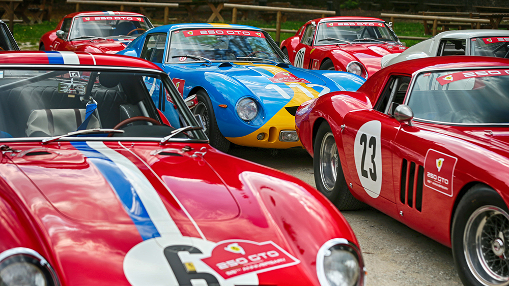
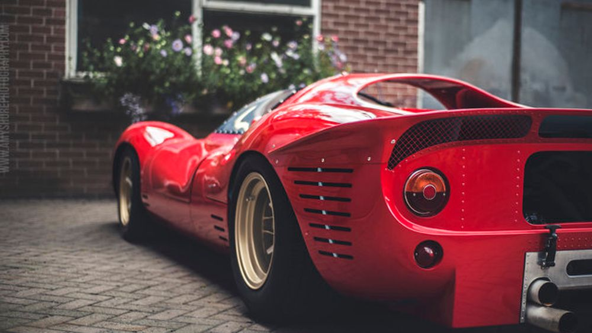

250 Tesla Rossa
Testa Rossa is Italian for “red head,” which is the nickname the 250 TR goes by in collectors circles. It was so named due to the red hue of the valve covers on the 3.0-liter V-12 under that swooping hood. Only 34 examples of the 250 TRs were ever produced (from 1957 to 1961), and most have solid racing pedigrees. The 250 graced the top of the podium at multiple 24 Hours of Le Mans races, including 1958, 1960, and 1961. One 250 TR that was campaigned in the 1957 French endurance race failed to finish, though it later won a race in Buenos Aires and Sebring, piloted by Phil Hill and Peter Collins. That exact model went for $12.2 million at auction back in 2009. In 2011, an unrestored 1957 250 TR reportedly fetched $39 million at an auction in the UK.